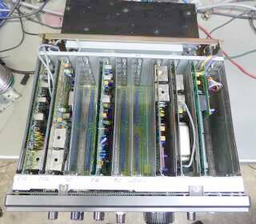
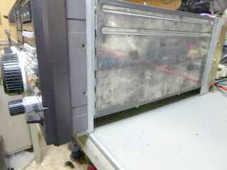
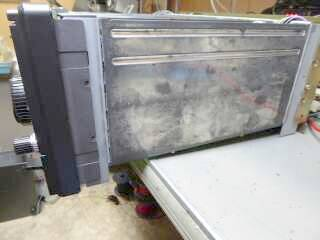
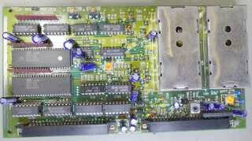
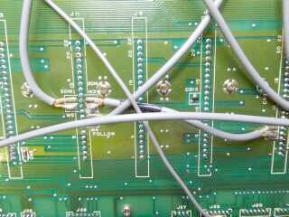
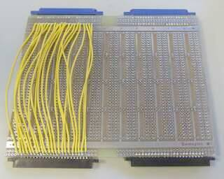
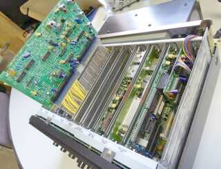

 |
トップ・カバーに、スピーカーを内蔵です
|
| ご覧のように、受信機の背中に送信パワー・ユニットを背負わせたような構造です |
|
トップ・カバーを外して撮したものです
マザ・ーボードのスロットに、必要なプラグイン・ユニットを差し込んで構成・・・このものは、オプション無しの標準モデルです（オプション用空きスロットが３つ）
基板はガラスエポキシ・・・安心できる材質です
おっと、よく見たら２３２ｃユニットがＣＰＵボードに乗っかっています
ＮＲＤ-５２５とのトランシーブに使っていたものかと想像されます
プラグイン・ユニットを何度も抜き差しをした・・・時に、間違って隣のスロットに差し込んで通電をしましたが、どこも壊れはしませんでした
感度低下は、アンテナの切替回路を疑って、関係箇所については半田処理を行いました
弱電界の受信において、Ｓメータこそ思うように振れませんが、それなりに受信ができています |
|
 |
恥ずかしながら、今回の取り組みでの失敗談です
上写真のように、作業テーブルに置いて作業を開始したのが、そもそもの間違いでした
一通りの取り組みが済んで数日後、最終の調整をしようとした時です、何かの拍子に、下写このようになってしまいました
ガタッと言う音と共に・・・・
ここまで、何とか正常動作と思われるところまでもってきていた本機なのですが、Ｕｎ－Ｌｏｃｋ ＬＥＤが点灯し（ＤＤＳ／ＬＯＯＰユニット共に）、全く送受信できなくなってしまいました（ＩＦノイズが、僅かに聞こえるだけ）
チックすると、２０ＭＨＺ／２ＭＨｚの出力に問題はなく、２ＭＨｚ台のＤＤＳ出力とＬｏ／７０ＭＨｚ台の出力が出ていない・・・
ご覧のように、作業テーブルの縁は金属が使用されています
マザーボード上のコネクタピンを、どこかでショートしたに違いない・・・そう考えて、怪しそうなところを手当たり次第、交換してみることにしました
幸いＴＴＬ-ＩＣは、手持ちがあります |
 |
|

下左半分に見えるＴＴＬ-ＩＣ ４個を交換
この際ですからＩＣソケットを採用 |
せっかく、感度不良というものを何とか正常動作と思えるところまでもってきたのに、ここで壊してオシマイというのはあまりに可哀想です
エクステンション・ボードは持っていませんので、動作させたままでのチェックは出来ません
回路図をにらんで、壊れそうなところについて、総当たりで交換です（こうするしか手がありません！）
まず、ＤＤＳボードから手をつけました
マザーボードに直接つながりのあるＴＴＬ-ＩＣについては、全て交換しました
残念ながら、交換作業が上手になっただけで、状況に変化は見られません |
|

もっと早く気づくべきことでした！ |
これは困った
原因が分からないまま、粗大ゴミ／ゴミ箱行きか・・・と思ったとき、ふとマザーボードに配線された同軸ケーブルが目に入りました
ソケット・ピンに突き刺さったケーブルが・・・
写真で黒のスリーブを掛けている部分が、ソケットに突き刺さり、外皮（網線）が２つのピンをショートした形になっていました
このケーブルを浮かせて、正常に動作することを確認、熱収縮チューブで養生しました
ＩＣ交換、ＶＣＯの調整ほか色々やったことは、今回のトラブルに全く関係ありませんでした
同軸ケーブルが重なっているところを、運悪く勢いよく押さえつけてしまった、これが原因で起きたショート・トラブルでした |
|
受信感度が低下、送信はしているようだ
こういう曰くのあったものを入手しました
ＪＲＣ製（ＪＲＣらしい）トランシーバーを、目の前で見てみたかった、という自らの欲からです
独特の構造
・マザーボードに、スロット基板を使用するプラグイン構造
・受信機の背面に送信パワーユニットを背負わせたような構造
日頃良く目にするアマチュア無線機とは一線を引いた構造です
業務用無線機メーカーだから強度のある筐体、と言うことではありません、むしろ筐体の強度としては弱いと思います
とにかく、このままでは手が出しにくい構造です
エクステンション・ボードがあるのが前提になった保守・・・ここは、業務用無線機の仕組みそのものです
関係して、使い勝手は非常に悪い・・・感覚的に使えるものではありません
日頃との違い、と言うことかも知れませんが、使い勝手については、アマチュア無線的ではないと断言できます
調整は、プラグイン・ユニットをスロットから抜いては変化をさせて差し込み、様子を見てはまた抜いて・・・と言うことを繰り返しましたが、きちんと調整できたとは到底言えません
こんなところでＯＫとしよう・・・で、終えました
エクステンション・ボードが使える機会があれば再挑戦です |
|

エクステンション・ボード（延長ボード）
調整用に、自作しました |
ＨＩＲＯＳＥからは、ＪＲＣが基板側に採用しているライトアングル・タイプ・コネクタの入手はできないことが分かり、入手できるストレート・タイプのコネクタで自作しました
従いまして、スロット・ガイドには収まりません
幅を小さく作りました
入出力の影響を少しでも回避しようと、ジャンパー配線は基板の裏／表にしました（無意味かも！）
基板は、たまたま古い手持ちがあったものを切って使いました（付いていた値札を見ると、ちょっと勇気が・・・）
背に腹は代えられません！ |

| ＷＥＢにあった英文サービス・マニュアルの記載に沿って、出来る（読める？）範囲で調整をやってみました |
|
写真にあるように、自作のボードは、スロット・ガイドで支持されません
マザー・ボード基板上のコネクタに刺さっているだけで、決して強度が取れているというものではありませんが、こうやって調整する分には十分でしょう
念願のＩＦＴの調整は、これでバッチしＯＫ、ＡＧＣアンプの調整（固定抵抗の変更）も行いました
まだ、なんとなくゲイン不足を感じます
強引に、ＩＦ最終段のＱダンプ抵抗を外してみました
| 信号入力電圧 |
Ｓメータ表示 |
| ３８ｄｂμＶ |
９ |
| ２８ｄｂμＶ |
７ |
| １７ｄｂμＶ |
５ |
| １１ｄｂμＶ |
３ |
１４ＭＨｚ帯での例ですが、たちまち、こういう調整結果でＯＫとしました |
|
2017.01 追記 |